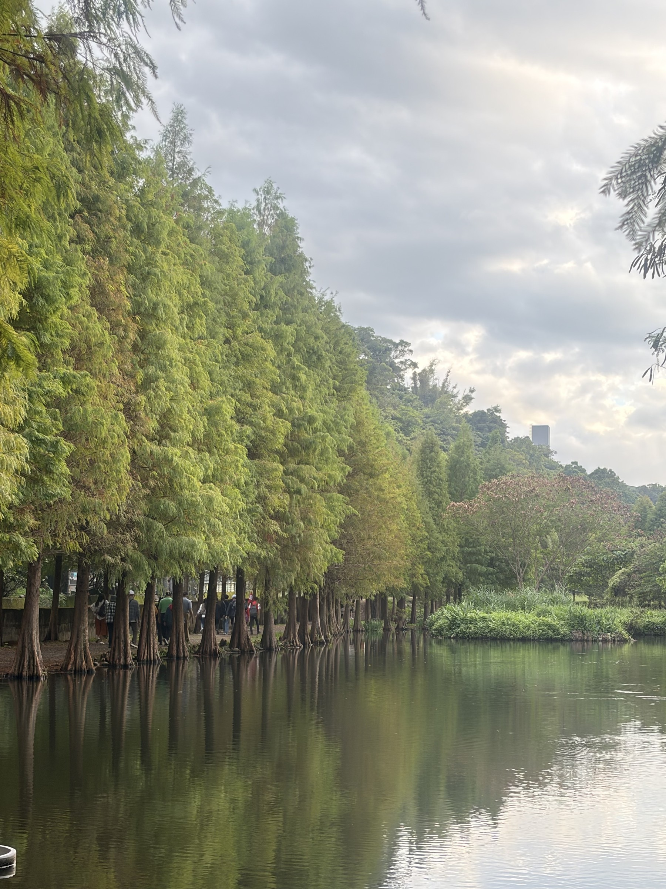

TAOYUAN · AN AUTUMN JOURNAL
老董與美惠
桃園秋旅把秋天，
走成一首詩。
有些風景，適合慢慢走。
有些時光，因為同行的人，
便有了值得收藏的溫度。
七幀光景 · 一段秋日映像 TAOYUAN, TAIWAN

不急著抵達，
讓風景慢慢靠近。
桃園的秋天，把顏色留在花間，把安靜藏進水裡。
老董與美惠的這一程，便在花與樹之間，翻開了輕柔的一頁。
相片留下光，也留下走過的痕跡。當日子往前，
這些細小的片刻，仍可以替我們留住一個秋天。
01 / 花開成海
在大地上，
讀一封花寫的信。
粉的、白的、橘黃的，沿著田畦舒展。
雲從花海上空經過，像一封還沒寫完的信；
那些說不盡的好光景，就留給眼睛慢慢讀。
為秋天取一個名字，讓花替它落款。
“01—C / 天光下的舞台
花海之外，還有一方為相聚搭起的風景。
花不催人趕路，
只把一季的明亮，
安靜地開在眼前。
花海之外，還有一方為相聚搭起的風景。
02 / 樹影入水
走進樹的句子，
聽水輕輕停頓。
離開花的熱鬧，樹把世界放低了音量。
一列列枝幹，像行距寬闊的詩；
水面不說話，卻將天光和樹影，完整地接住。
不必每一步都有答案。
能一起站在這片樹影裡，便已是一段好時光。
AN UNEXPECTED LITTLE MOMENT
旅途的可愛，
往往不在計畫裡。
幾隻鵝，把午後站成一幅自在的畫。
有的望向遠處，有的湊近鏡頭，
彷彿這片天地，原就有牠們自己的節奏。
風景不總是壯闊的。
偶然一個停步，也能讓回憶多一點笑意。
04 / 讓秋天再走一遍
照片之外，
還有風的筆跡。
當畫面緩緩移動，花田便有了呼吸。
把這二十幾秒留給眼前，
讓視線再次走過，那一片開得正好的秋色。
秋日影像 · 約 26 秒 · 原創鋼琴配樂
PRESS PLAY, KEEP THE MOMENT.
TO BE CONTINUED
把風景留在相簿，
把同行留在心裡。
秋天有很多種顏色。
這一頁，叫作老董與美惠的桃園。